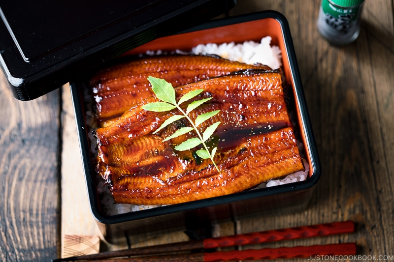

Unadon (Grilled Eel Rice Bowl)

Unadon (Grilled Eel Rice Bowl) is a popular Japanese delicacy that you can easily make at home for lunch or dinner. This delicious unagi bowl features perfectly grilled eel fillets glazed with my homemade unagi sauce and nestled on a bed of hot steamed rice. The tantalizing aroma of the sweet caramelized glaze is enough to make your mouth water!
INGREDIENTS
For Unagi Sauce
- 1/4 cup mirin
- 1 1/2 tbsp sake
- 2 1/2 tbsp sugar
- 1/4 cup soy sauce
INSTRUCTIONS
- To a small saucepan, add ¼ cup mirin, 1½ Tbsp sake, and 2½ Tbsp sugar.
- Set the saucepan on the stove over medium heat and whisk the mixture together. Then, add ¼ cup soy sauce and bring the mixture to a boil.
- Once boiling, reduce the heat to maintain a gentle simmer; you should see small bubbles around the edge of the pan. Continue simmering until the liquid is reduced to roughly one-third of the original amount, about 10-15 minutes.
- Toward the end of cooking, the sauce will thicken and you will see more bubbles. Use the chopstick to confirm that the thickened sauce is one-third of the original amount. Then, remove it from the heat. As it cools, the sauce will thicken more.
- Cut 2 unagi (freshwater eel) fillets in half or thirds to fit the size of your donburi serving bowl.
- Preheat the broiler on High (550ºF/288ºC) for 5 minutes with a rack placed about 8 inches (20 cm) away from the top heating element (in the center of the oven).
- Line a baking sheet with foil for easy cleaning and brush or spray the oil onto the foil. Place the unagi pieces on the foil, skin side down. Broil the unagi until the surface is blistered a bit, about 5-7 minutes. Broil it on one side only; there's no need to flip it over.
- Open the oven and brush the sauce on top of the unagi. Then, broil again for 30-60 seconds until you see the sauce bubbling on top.
- Serve the hot steamed rice in individual bowls. Then, pour or brush some of the unagi sauce on top of the rice.
- Next, place one portion of the unagi on the rice in each bowl. Pour or brush more sauce on top of the unagi.